Experimental Setup
Factors
| Factor | Low | High | Unit |
|---|---|---|---|
bath_temp | 52 | 62 | C |
cook_time | 60 | 240 | min |
sear_time | 30 | 90 | sec |
rest_time | 2 | 10 | min |
Fixed: cut = ribeye, thickness_mm = 38
Responses
| Response | Direction | Unit |
|---|---|---|
tenderness | ↑ maximize | pts |
juiciness | ↑ maximize | pts |
Configuration
Experimental Matrix
The Full Factorial Design produces 16 runs. Each row is one experiment with specific factor settings.
| Run | bath_temp | cook_time | sear_time | rest_time |
|---|---|---|---|---|
| 1 | 52 | 240 | 90 | 10 |
| 2 | 62 | 60 | 30 | 10 |
| 3 | 52 | 240 | 30 | 10 |
| 4 | 52 | 240 | 90 | 2 |
| 5 | 62 | 240 | 90 | 2 |
| 6 | 62 | 60 | 90 | 2 |
| 7 | 62 | 240 | 30 | 2 |
| 8 | 62 | 60 | 30 | 2 |
| 9 | 52 | 60 | 30 | 10 |
| 10 | 52 | 60 | 90 | 2 |
| 11 | 62 | 240 | 30 | 10 |
| 12 | 62 | 240 | 90 | 10 |
| 13 | 52 | 240 | 30 | 2 |
| 14 | 62 | 60 | 90 | 10 |
| 15 | 52 | 60 | 30 | 2 |
| 16 | 52 | 60 | 90 | 10 |
Step-by-Step Workflow
Preview the design
Generate the runner script
Execute the experiments
Analyze results
Get optimization recommendations
Generate the HTML report
Features Exercised
| Feature | Value |
|---|---|
| Design type | full_factorial |
| Factor types | continuous (all 4) |
| Arg style | double-dash |
| Responses | 2 (tenderness ↑, juiciness ↑) |
| Total runs | 16 |
Analysis Results
Generated from actual experiment runs using the DOE Helper Tool.
Response: tenderness
Top factors: sear_time (41.0%), bath_temp (31.1%), cook_time (18.0%).
Pareto Chart
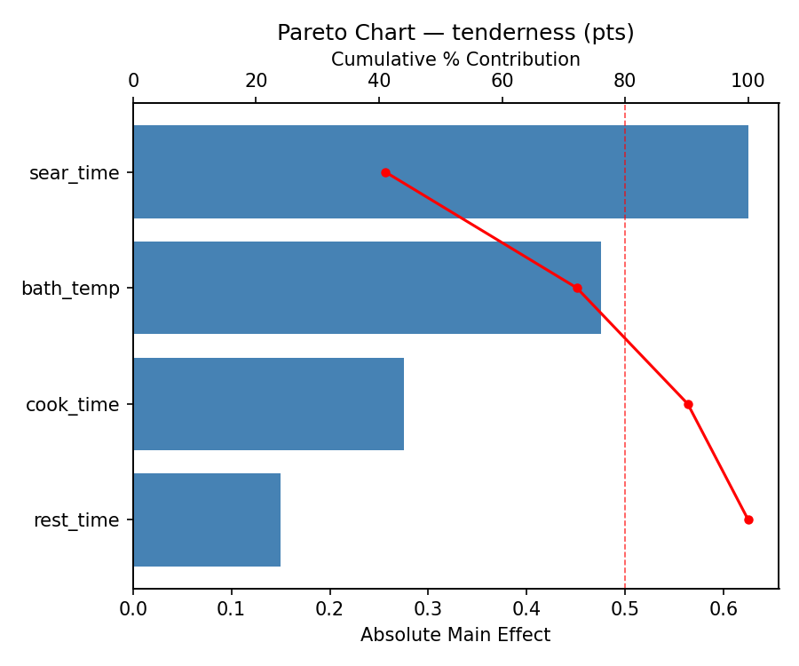
Main Effects Plot
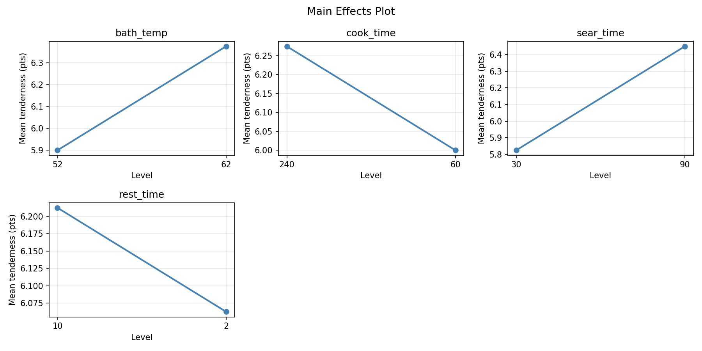
Response: juiciness
Top factors: bath_temp (33.3%), cook_time (33.3%), rest_time (30.8%).
Pareto Chart
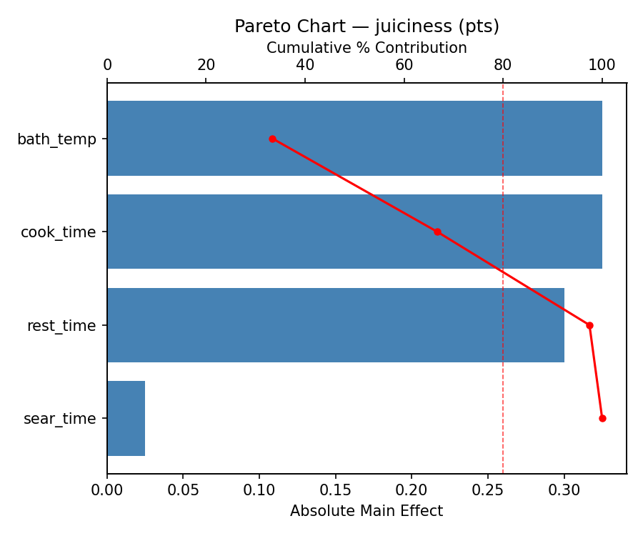
Main Effects Plot
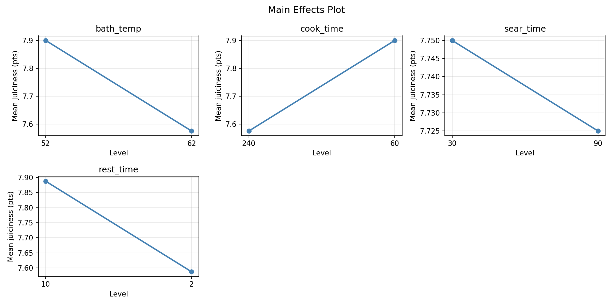
Response Surface Plots
3D surfaces fitted with quadratic RSM. Red dots are observed data points.
juiciness bath temp vs cook time

juiciness bath temp vs rest time
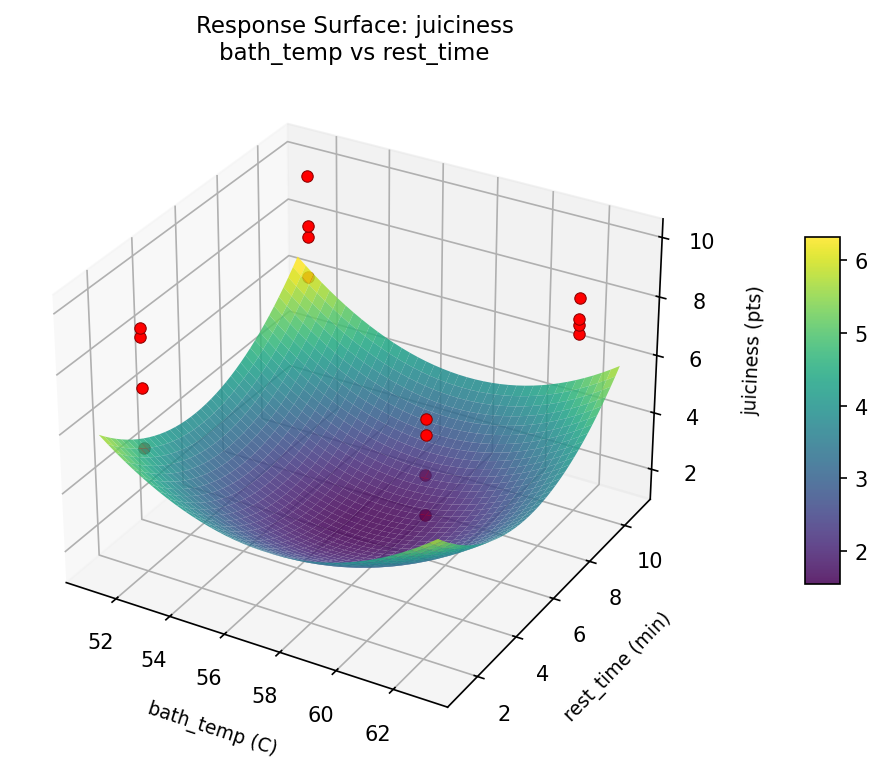
juiciness bath temp vs sear time
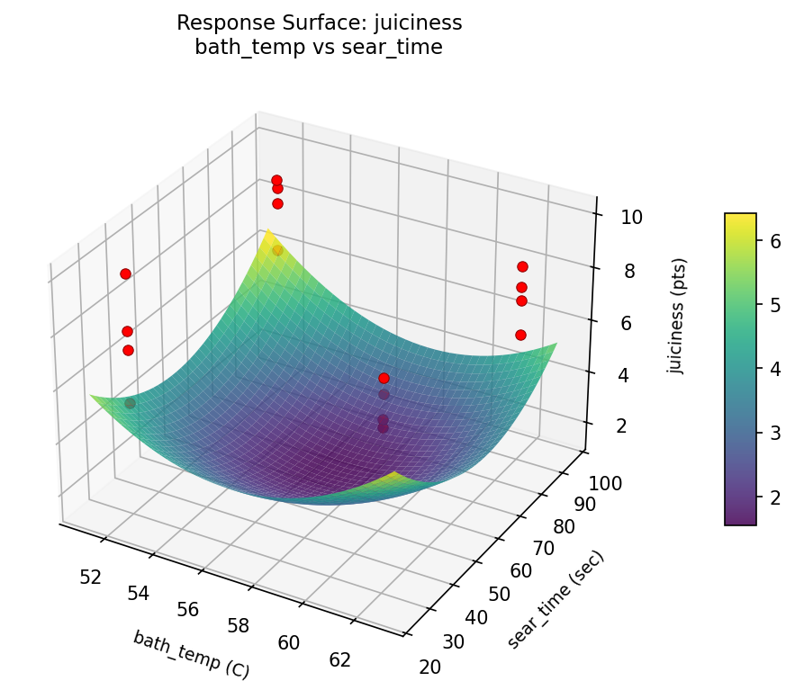
juiciness cook time vs rest time
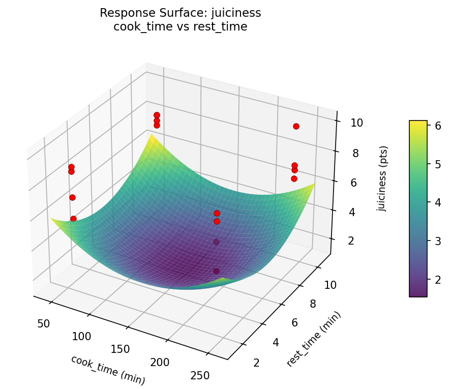
juiciness cook time vs sear time
juiciness sear time vs rest time
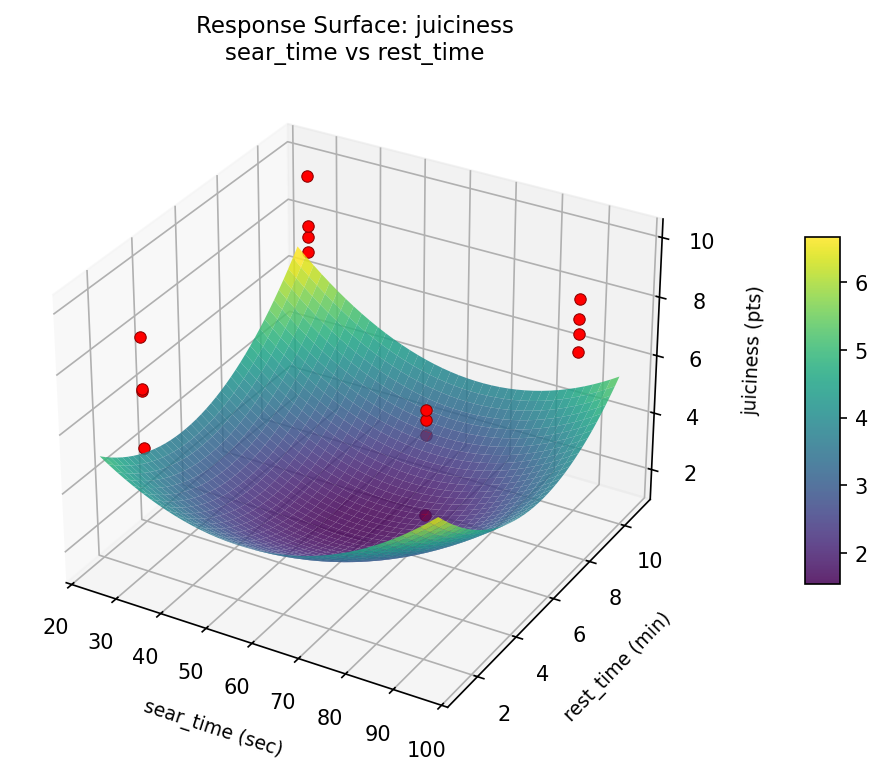
tenderness bath temp vs cook time
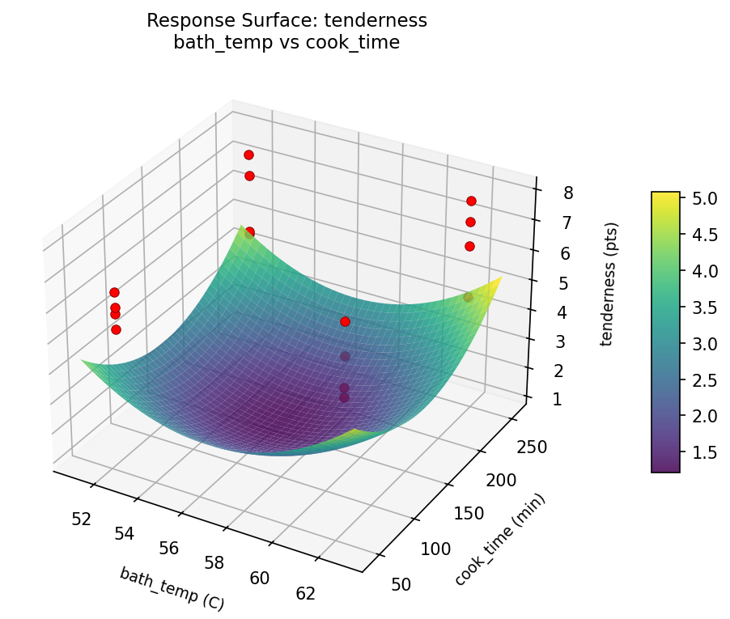
tenderness bath temp vs rest time
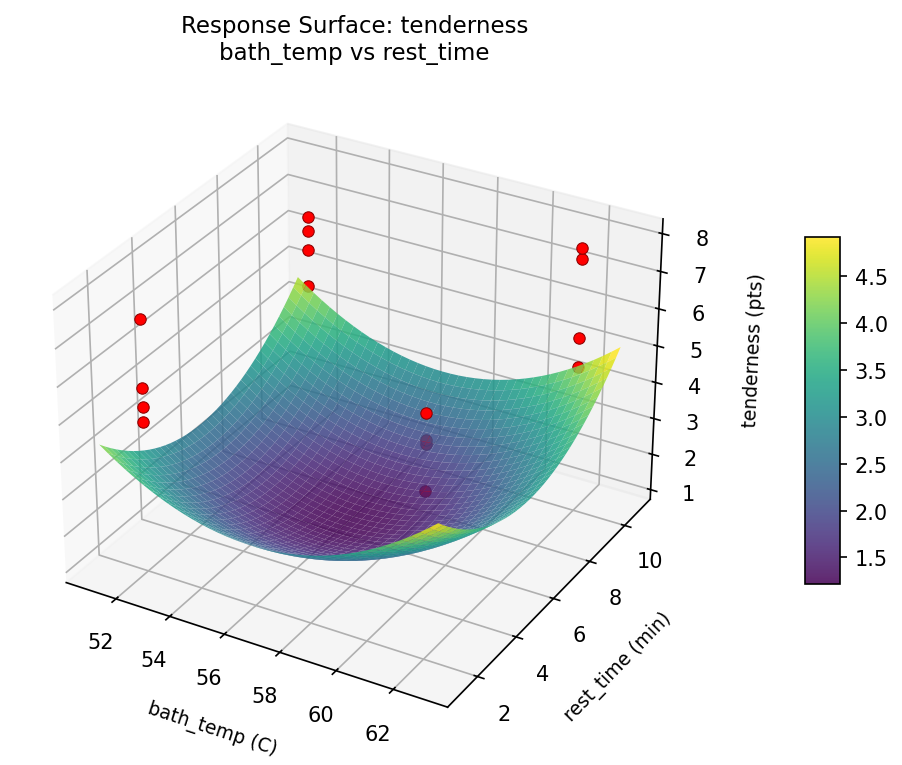
tenderness bath temp vs sear time
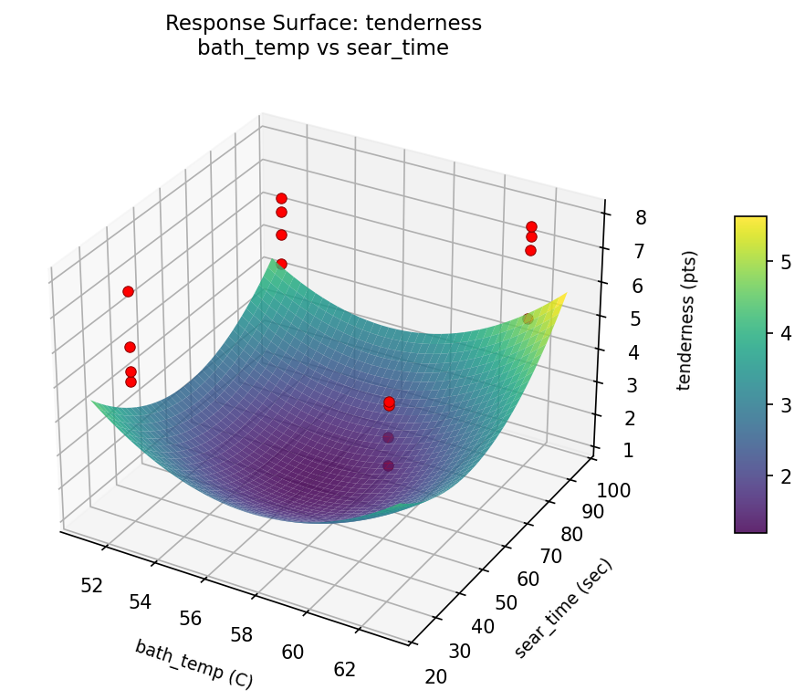
tenderness cook time vs rest time
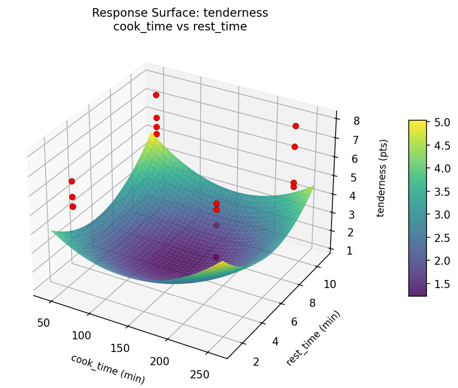
tenderness cook time vs sear time
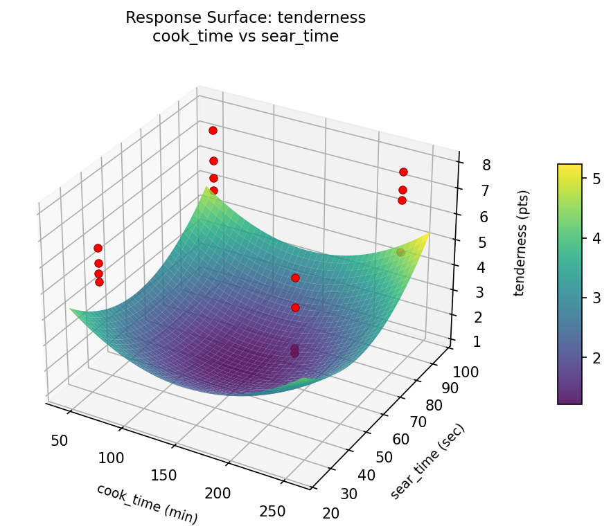
tenderness sear time vs rest time
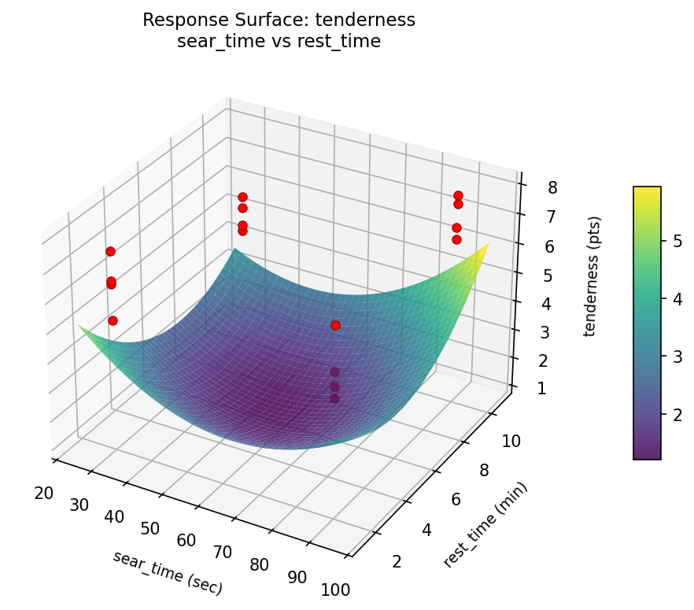